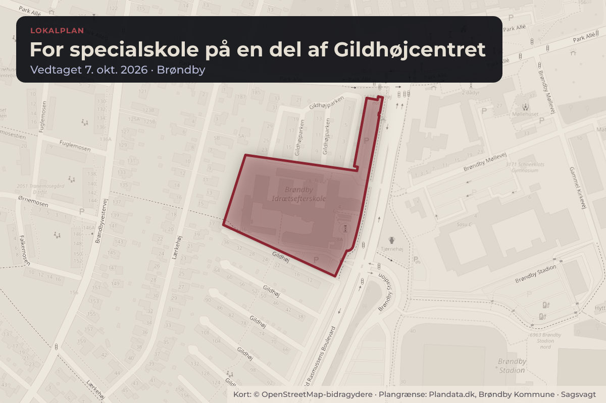
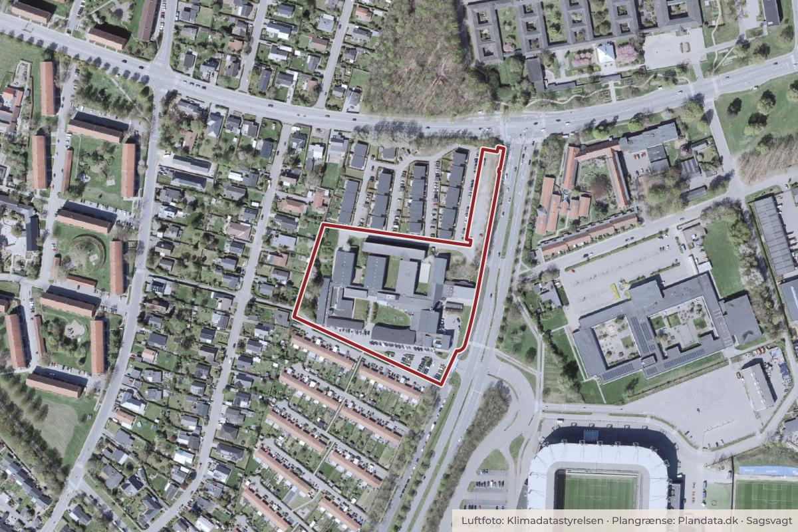

Besluttet 7. oktober, Kommunalbestyrelsen, Brøndby
Endelig vedtagelse af Lokalplan 263 for Specialskole på en del af Gildhøjcentret
BoligerByggeri og lokalplanerSkoler og børnUnge og uddannelse

Kort: © OpenStreetMap-bidragydere. Plangrænse: Plandata.dk, Brøndby Kommune.

Kort fortalt
- Forslaget
- Kommunalbestyrelsen endeligt vedtager Lokalplan 263 for specialskole på en del
- Hvem
- Kommunalbestyrelsen, Brøndby Kommune
- Hvornår
- Onsdag 7. oktober 2026
- Status
- Besluttet. Indstillingen tiltrædes med 13 stemmer (A, B, Ø og F) imod 6 stemmer (C og O). Beslutningshistorik Teknik- og Planudvalget - 2026-2029, 23.09.2026, Punkt 4 Indstillingen anbefales med 4 stemmer (A, F) imod 1 (O). Økonomiudvalget - 2026-2029, 30.09.2026, Punkt 14 Indstillingen anbefales med 5 stemmer (A, B og F). Imod stemte 2 (C og O).
- Næste skridt
- Med en endelig vedtagelse af Lokalplan 263 for Specialskole på en del af Gildhøjcenteret, vil lokalplanen blive indberettet til Plan- og Landdistriktsstyrelsen med en ikrafttrædelse senest den 12. oktober 2026.
Er noget forkert her? Skriv til os
Læs hele sagen Kommunens egen tekst
Indstilling
Teknik- og Miljøforvaltningen indstiller,
1. at Kommunalbestyrelsen endeligt vedtager Lokalplan 263 for specialskole på en del
af Gildhøjcenteret.
Sagsfremstilling
Baggrund for lokalplanen
Forvaltningen har efter et mandat fra Kommunalbestyrelsen i december 2025 nedlagt et §14forbud efter planloven mod anvendelse af en del af Gildhøjcenteret til studieboliger
eller hotel. Brøndby Kommune skal derfor i medfør af planloven udarbejde en lokalplan, som
muliggør en anden anvendelse.
Brøndby Kommune har gennem en årrække oplevet et stigende antal børn og unge med
behov for specialiserede tilbud, særligt inden for skoleområdet. Kommunen har derfor
undersøgt mulighederne for at anvende eksisterende kommunale bygninger til formålet.
Dette har ikke vist sig muligt. Derfor har kommunen afsøgt muligheden for at anvende de
privatejede ejendomme beliggende Gildhøjparken 4, 2605 Brøndby og Kjeld Rasmussens
Boulevard 12, 2605 Brøndby (mat.nr. 30cd og 30h, Brøndbyvester by, Brøndbyvester), som i
dag fremstår ubenyttet efter ophør af anvendelse til privathospital. Ejendommene vurderes,
efter delvis renovering og ombygning, at kunne opfylde de nødvendige krav til etablering af
et fremtidssikret heldagstilbud med de rette fysiske og pædagogiske rammer.
Den nugældende lokalplan 206B fra februar 2009 muliggør anvendelse til offentligt formål,
men også bl.a. erhvervsformål mv. Lokalplan 263 præciserer anvendelsen af en del af
Gildhøjcenteret til offentlige formål, herunder specialskole.
Side 1
Lokalplanens indhold
Lokalplanen er opdelt i to delområder. Lokalplanen giver mulighed for at omdanne en del af
bygningen, så den kan benyttes som specialskole. Det gælder for delområde A. Delområde
B anvendes i dag til efterskoleformål og huser Brøndby Idrætsefterskole. Her muliggøres
udbygningsmuligheder i mindre omfang, og den nuværende anvendelse til efterskole vil efter
lokalplanens vedtagelse kunne fortsætte som hidtil.
Konsekvenser for natur og miljø
Forvaltningen har screenet lokalplanforslaget i henhold til Miljøvurderingsloven. På denne
baggrund er det vurderet, at planen ikke vil få nogen væsentlig indvirkning på miljøet. De
miljømæssige konsekvenser ved en realisering af lokalplanens bestemmelser vurderes at
være uændrede i forhold til de miljøkonsekvenser, som gør sig gældende i den eksisterende
lokalplan. Teknik- og Planudvalget godkendte den 20. maj 2026 på den baggrund, at der ikke
skulle udarbejdes en særlig miljørapport.
Borgerinddragelse
Kommunalbestyrelsen besluttede den 10. juni 2026 at sende forslag til lokalplan 263 i
offentlig høring i 11 uger fra 15. juni 2026 til den 31. august 2026. Høringsperioden har været
forlænget ud over de normale otte uger på grund af sommerferien. Der er i høringsperioden
kommet tre høringssvar (se bilag 3). Der blev den 20. august 2026 afholdt et borgermøde om
lokalplanen. Der deltog ca.15 borgere til borgermødet. Referat af borgermødet kan læses i
bilag 4.
Høringssvar
Hovedsynspunkter i borgernes henvendelser:
• Kroppedal Museum påpeger, at beskyttelseszonen for gravhøjen Tjørnehøj
overlapper området og bør omtales.
• Naboerne mod vest støtter formålet, men kræver tiltag mod skolens aktivitetsstøj
(f.eks. støjskærm på skolens grund, afstand til legearealer, nedadrettet lys og
støjreguleret ventilation) samt bevaring af det grønne plantebælte.
• Bekymring omkring en planlagt 11 meter høj bygning (skygger/gensyn), øget
trafikstøj og bekymring for, at den nuværende utryghed i området gør det uegnet til
en specialskole og at skolen vil være til gene for ældre beboere i nærområdet.
Forvaltningen bemærker, at de 11 meters bebyggelse er på baggrund af den eksisterende
bebyggelses maksimale højde, og at lokalplanen i øvrigt ikke tillader nyt større byggeri.
Forvaltningen bemærker til sidst, at en specialskole som den påtænkte ikke forventes at give
mere utryghed i området, men at en aktiv anvendelse af de pt. tomme bygninger i stedet kan
give bedre tryghed, da der vil være mere aktivitet i området i dagtimerne.
På baggrund af høringssvarene foreslår forvaltningen følgende ændringer i Lokalplan 263:
• Der tilføjes et afsnit omkring gravhøjen i lokalplanens redegørelse.
• Der vil blive stillet krav om støjafskærmning omkring opholdsarealer i lokalplanens
vestlige friareal.
• Der tilføjes en bestemmelse om bevaring af beplantningsbæltet mod vest.
Side 2
Videre proces
Med en endelig vedtagelse af Lokalplan 263 for Specialskole på en del af Gildhøjcenteret, vil
lokalplanen blive indberettet til Plan- og Landdistriktsstyrelsen med en ikrafttrædelse senest
den 12. oktober 2026.
Lokalplanen vil herefter være bindende for fremtidigt byggeri inden for lokalplanområdet.
Økonomiske konsekvenser
Ingen bemærkning.
Konsekvenser for grøn omstilling
Der er ingen direkte konsekvenser for den grønne omstilling. Lokalplanen muliggør ikke nyt
byggeri i større omfang, men bevarer den eksisterende bebyggelse, og gør det muligt at
anvende denne til et nyt formål, hvorved evt. CO2-udledning ved nybyggeri spares.
Side 3
Beslutning
Indstillingen tiltrædes med 13 stemmer (A, B, Ø og F) imod 6 stemmer (C og O).
Beslutningshistorik
Teknik- og Planudvalget - 2026-2029, 23.09.2026, Punkt 4
Indstillingen anbefales med 4 stemmer (A, F) imod 1 (O).
Økonomiudvalget - 2026-2029, 30.09.2026, Punkt 14
Indstillingen anbefales med 5 stemmer (A, B og F). Imod stemte 2 (C og O).
Kilde: Brøndby Kommune, Kommunalbestyrelsen, referat fra mødet onsdag 7. oktober 2026, punkt 15. Læs den originale sag hos kommunen.